>>CATEGORÍAS>>
Manga
Videojuegos
Anime
"A cerca de"
Los mangas más vendidos de la historia
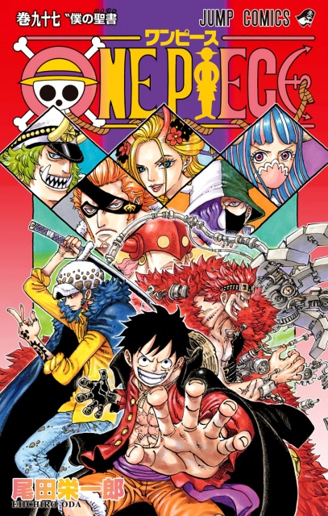
1. One piece (1997 — Presente)
Es un manga creado por Eiichiro Oda. Comenzó a publicarse en Weekly Shōnen Jump el 19 de julio de 1997; Shueisha publica los capítulos en volúmenes: el primero publicado el 24 de diciembre de 1997. Cuenta con más de 450 millones de copias vendidas y cada año que pasa sigue aumentando. La obra comienza con la ejecución de Gol D. Roger, un hombre conocido como Rey de los Piratas. Poco antes de su muerte, Roger hace mención de su gran tesoro legendario, el «One Piece» y que puede ser tomado por todo aquel que lo desee. Esto marca el inicio de una era conocida como la Gran Era Pirata. Como resultado, un sin número de piratas zarparon hacia la Grand Line con el objetivo de encontrarlo.
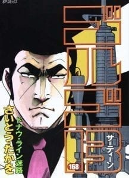
2. Golgo 13 (1968 — Presente)
Es un manga japonés escrito e ilustrado por Takao Saito. Es publicado en la revista Big Comic de la editorial Shōgakukan desde octubre de 1968. En 1975, el manga ganó el Premio Shōgakukan en la categoría de Mejor manga. La serie sigue la vida del protagonista homónimo, un asesino profesional.
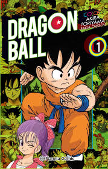
3. Dragon Ball (1984–1995)
Es un manga escrito e ilustrado por Akira Toriyama. Fue publicado originalmente en la revista Shōnen Jump, de la editorial japonesa Shūeisha, entre 1984 y 1995. Su trama describe las aventuras de Goku, un guerrero Saiyan, cuyo fin es proteger a la Tierra de otros seres que quieren conquistarla y exterminar a la humanidad. Conforme transcurre la trama, conoce a otros personajes que le ayudan en este propósito. Las ventas del material impreso, cuantificadas en más de 156 millones de copias.
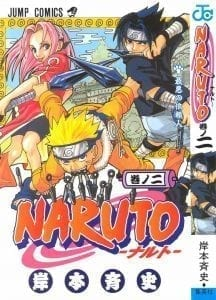
4. Naruto (1999–2014)
Comenzó en los años 90 y desde entonces es imposible que, si sabes algo mínimo de anime o manga, desconozcas su historia. Es uno de los mangas más populares y ha vendido 220 millones de copias.
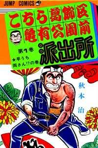
5. KochiKame (1976–2016)
Es un manga de Osamu Akimoto que trata de las historias que surgen en el día a día en la Comisaría del Parque de Kameari. Apareció por primera vez en la revista japonesa Shōnen Jump en octubre de 1976, por lo que se convierte en uno de los mangas más largos y longevos de la historia. Cuenta con más de 156 millones de copias vendidas.
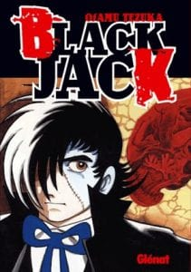
6. Black Jack (1973–1983)
Es un manga creado por Osamu Tezuka en la década de 1970, que relata las aventuras del médico apodado con el mismo nombre. Publicado por Shueisha cuenta con 176 millones de copias venidas.
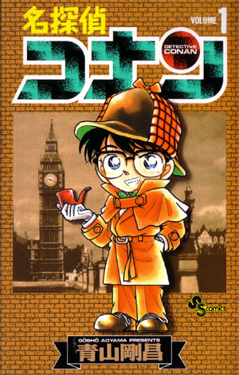
7. Detective Conan (1994 — Presente)
Es un manga escrito e ilustrado por Gosho Aoyama. La historia se centra en Shinichi Kudo, un famoso joven detective que es envenenado por unos hombres vestidos de negro, pero en vez de morir encoge hasta tomar el aspecto de un niño de 7 años. Tras esto, Shinichi, decide cambiarse el nombre por Conan Edogawa para proteger a los suyos, obtener suficientes pruebas para detener a la organización y encontrar una cura para volver a su tamaño normal. Cuenta con 150millones de copias vendidas.
Los juegos más vendidos de la historia

1. Minecraft
Minecraft vio la luz en el año 2011 y revolucionó el mundo del gaming con un estilo gráfico muy sencillo. En torno a él crecieron multitud de comunidades en plataformas como YouTube —que en aquel momento no eran lo que son hoy en día— y desde su lanzamiento ha vendido 176 millones de unidades.
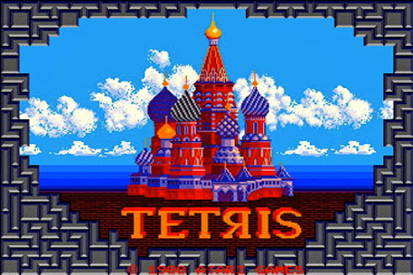
2. Tetris
Si hay un juego al que probablemente todo el mundo —salvo quizás los más jóvenes— ha jugado alguna vez en su vida, ese es Tetris. El juego ha tenido infinidad de versiones, pero la original se remonta hasta hace casi cuatro décadas. La cantidad exacta de copias vendidas es complicada de determinar, pero supera los 170 millones entre copias físicas y digitales.
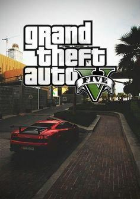
3. Grand Theft Auto 5
Grand Theft Auto V es la última entrega, hasta la fecha, de una saga que ya era uno de los grandes nombres de la industria tras el éxito de sus predecesores, especialmente en el caso del icónico San Andreas. Pese a ello, las múltiples versiones de este juego salido en 2013 le han permitido alcanzar la increíble cifra de 110 millones de copias vendidas.
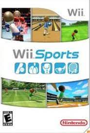
4. Wii Sports
La Wii fue un auténtico bombazo en la década de los 2000 tras introducir grandes novedades, especialmente el control por movimiento. Ya te adelantamos que vas a encontrar unos cuantos juegos de esta consola en la lista y Wii Sports es el primero de ellos. La diversión que ofrecía con su recreación virtual de deportes como tenis, boxeo o bolos hizo que vendiese casi 83 millones de copias. También ayudó que viniese incluido en la mayoría de los packs de la consola, claro.

5. PUBG
PUBG puso en primera línea el género battle royale en el año 2017. Posteriormente Fortnite le comió la tostada en términos de popularidad, quizás debido a que era free-to-play y PUBG no. En cualquier caso, su éxito le ha permitido vender 50 millones de copias. Nada mal.
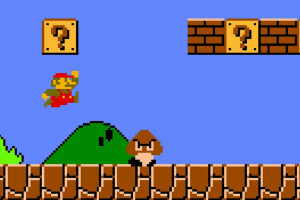
6. Super Mario Bros
El fontanero más conocido de los videojuegos debutó en el año 1983 con Mario Bros., pero su verdadero éxito llegó dos años después. Como Tetris, es complicado encontrar a una sola persona que no conozca este videojuego y que no haya probado alguno de sus niveles al menos una vez en su vida. ¿Cuánto ha vendido? 48 240 000 copias entre sus múltiples versiones.
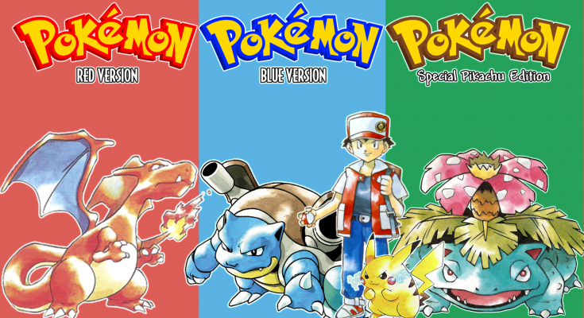
7. Pokemon Rojo, Azul y Verde
Vale, estrictamente son tres juegos y no uno. Pero para esta ocasión vamos a agrupar las tres versiones con las que debutó Pokémon en el año 1996. A estas alturas lo sabe todo el mundo pero, por si has vivido debajo de una roca toda tu vida, te lo volvemos a contar: en Japón salieron originalmente Pokémon Rojo y Verde, aunque posteriormente llegaría Azul. Esta última versión fue la que llegó a Occidente dividida en dos: Rojo y Azul. Más de 47 millones de copias tienen la culpa de que estén en esta lista.
Pequeño blog dedicado al entretenimiento
Bienvenido espero te guste el contenido de la página, quiero aclarar que algunos top son de opinion personal por lo cual no deben ser tomados de manera critica y otros son basados en cifras oficiales.
Posdata: No soy otaku atentamente el admin xD